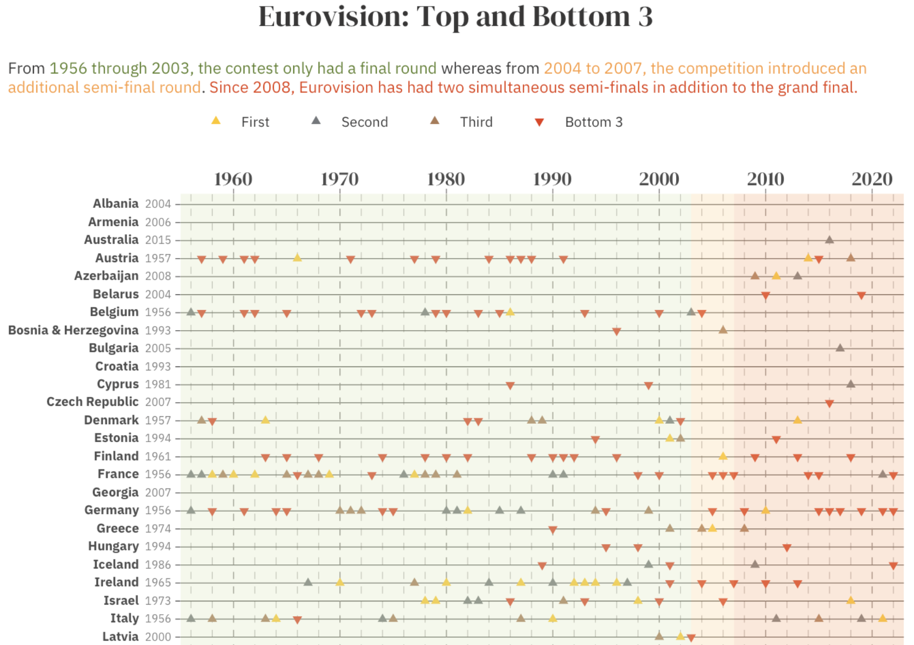
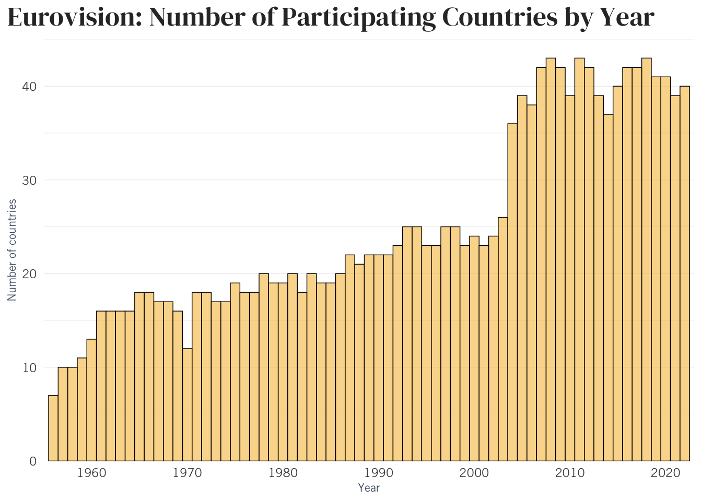
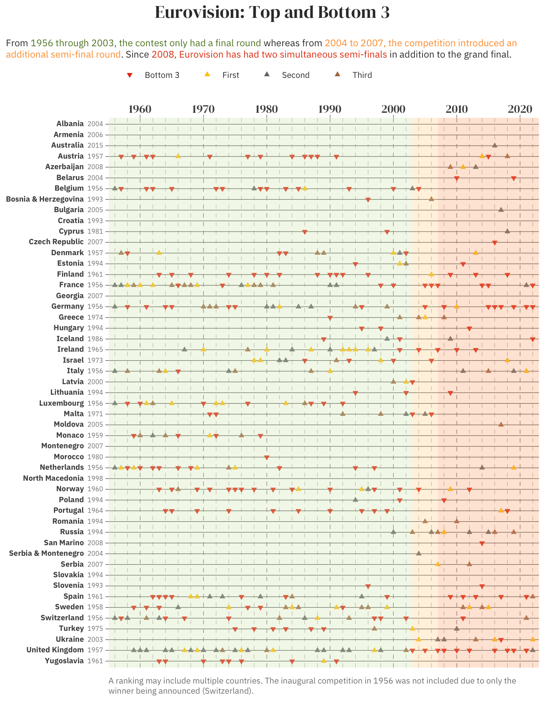

Tidy Tuesday is a weekly project that provides a dataset for R users to explore and visualize. On May 17, 2022, it featured a Eurovision dataset.
Exploring the dataset
Every year, more than 40 countries across Europe, and from other continents, participate in the Eurovision Song Contest, a continent (and beyond)-wide extravaganza complete with sparkles and Hard Rock Hallelujah. In the case of the dataset, it lists every artist and song performed on the show since the inaugural show in 1956. The competition has been held annually since then, except in 2020.
A bit of wrangling of this dataset can give some insight into how the history of the competition and how it has changed through the decades to include more countries. Here’s a glimpse of the original dataset:
glimpse(eurovision)Rows: 2,005
Columns: 18
$ event <chr> "Turin 2022", "Turin 2022", "Turin 2022", "Turin 2022",…
$ host_city <chr> "Turin", "Turin", "Turin", "Turin", "Turin", "Turin", "…
$ year <dbl> 2022, 2022, 2022, 2022, 2022, 2022, 2022, 2022, 2022, 2…
$ host_country <chr> "Italy", "Italy", "Italy", "Italy", "Italy", "Italy", "…
$ event_url <chr> "https://eurovision.tv/event/turin-2022", "https://euro…
$ section <chr> "first-semi-final", "first-semi-final", "first-semi-fin…
$ artist <chr> "Kalush Orchestra", "S10", "Amanda Georgiadi Tenfjord",…
$ song <chr> "Stefania", "De Diepte", "Die Together", "Saudade, Saud…
$ artist_url <chr> "https://eurovision.tv/participant/kalush-orchestra-22"…
$ image_url <chr> "https://static.eurovision.tv/hb-cgi/images/963164d0-06…
$ artist_country <chr> "Ukraine", "Netherlands", "Greece", "Portugal", "Bulgar…
$ country_emoji <chr> ":flag_ua:", ":flag_nl:", ":flag_gr:", ":flag_pt:", ":f…
$ running_order <dbl> 6, 8, 15, 10, 7, 5, 17, 16, 3, 9, 4, 14, 11, 1, 12, 2, …
$ total_points <dbl> 337, 221, 211, 208, 29, 15, 187, 177, 159, 154, 118, 10…
$ rank <dbl> 1, 2, 3, 4, 16, 17, 5, 6, 7, 8, 9, 10, 11, 12, 13, 14, …
$ rank_ordinal <chr> "1st", "2nd", "3rd", "4th", "16th", "17th", "5th", "6th…
$ qualified <lgl> TRUE, TRUE, TRUE, TRUE, FALSE, FALSE, TRUE, TRUE, TRUE,…
$ winner <lgl> FALSE, FALSE, FALSE, FALSE, FALSE, FALSE, FALSE, FALSE,…To start off, how many countries have participated each year?
# divide up years on x-axis by decades
decade_breaks <- c(1960,1970,1980,1990,2000,2010,2020)
eurovision %>%
select(year, artist_country) %>%
distinct() %>%
count(year) %>%
ggplot(aes(x=year, y=n)) +
geom_col(fill="#F7C04A", color="black", size=0.25, alpha=0.6, width=1, show.legend=FALSE) +
scale_x_continuous(limits=c(1955,2023),
breaks=decade_breaks,
expand=c(0, 0)) +
scale_y_continuous(expand=c(0, 0), limits=c(0, 45)) +
theme_minimal() +
theme(plot.title = element_text(family="DM Serif Display", size=rel(1.75)),
plot.title.position = "plot",
legend.position = "top",
legend.justification = "left",
legend.direction = "horizontal",
legend.background = element_rect(fill="#fff7f5", color=NA),
legend.text = element_text(margin=margin(r=0.28, unit="cm"), size=10),
legend.box.margin = margin(c(0,0,0,-77)),
text = element_text(family="Trade Gothic LT Std", color="#313131"),
plot.caption = element_textbox_simple(color="#666666"),
axis.title = element_text(size=rel(0.75), color="#525E75"),
panel.grid.minor.x = element_blank(),
panel.grid.major.x = element_blank(),
panel.grid.minor.y = element_line(size=0.15),
panel.grid.major.y = element_line(size=0.2)) +
labs(title="Eurovision: Number of Participating Countries by Year",
caption=NULL,
x="Year",
y="Number of countries")Warning: Using `size` aesthetic for lines was deprecated in ggplot2 3.4.0.
ℹ Please use `linewidth` instead.Warning: The `size` argument of `element_line()` is deprecated as of ggplot2 3.4.0.
ℹ Please use the `linewidth` argument instead.
Note: While the competition was not held in 2020, the list of participants had already been determined. Also, what happened in 1970?1
Each row of the dataset includes, among other details, the year, song and singer, as well as the stage of the competition in which the performance took place. A look into the data reveals how over the years, the contest has expanded to include more countries, which in turn led to multiple segments of the eshow.
Which years had which segments?
eurovision %>%
# keep only select variables
select(host_city, year, host_country, section) %>%
distinct() %>%
# combine sections (ex. merge "semi-final" and "grand-final" rows that are in the same year into "semi-final, grand-final")
group_by(year) %>%
mutate(sections = paste0(section, collapse = ", ")) %>%
# How many of each type of combination of competition sections?
count(sections) %>%
ungroup() %>%
group_by(sections) %>%
# for each section, get the earliest and latest year to get range
summarize(first_year = min(year), last_year = max(year)) %>%
# sort by earliest year
arrange(first_year) %>%
select(Sections=sections, `Earliest year`=first_year, `Latest year`=last_year) %>%
kable()| Sections | Earliest year | Latest year |
|---|---|---|
| final | 1956 | 2003 |
| semi-final, grand-final | 2004 | 2007 |
| first-semi-final, second-semi-final, grand-final | 2008 | 2022 |
Results: For nearly 50 years, the competition included only one level, the “final” show. In 2004, following an influx of new participating countries, organizers introduced the semi-final stage, the top 10 of which proceeded to the final – along with the top 10 from the 2003 final, the host country and the five automatically qualifying countries of France, Germany, Italy, Spain and the UK.
In 2008, the competition started holding two simultaneous semi-finals with qualifiers from each section (along with 🇫🇷 🇩🇪 🇮🇹 🇪🇸 🇬🇧 and the host country) making up the finalists.2
As evident in the dataset, only in 1956 did each of the participating countries (seven at the time) have two performances, either performed by the same or different people, with only two rankings in the end: One entry, representing the host country of Switzerland, (Lys Assia performing Refrain) placed first while the other 13 performances placed “second,” at least in the sense that ranked results beyond the winner were not announced.
eurovision %>%
filter(year==1956) %>%
arrange(rank) %>%
select(Artist=artist, Song=song, `Artist's Country`=artist_country, Rank=rank) %>%
kable()| Artist | Song | Artist’s Country | Rank |
|---|---|---|---|
| Lys Assia | Refrain | Switzerland | 1 |
| Tonina Torielli | Amami Se Vuoi | Italy | 2 |
| Michèle Arnaud | Les Amants De Minuit | Luxembourg | 2 |
| Dany Dauberson | Il Est Là | France | 2 |
| Freddy Quinn | So Geht Das Jede Nacht | Germany | 2 |
| Mony Marc | Le Plus Beau Jour De Ma Vie | Belgium | 2 |
| Corry Brokken | Voorgoed Voorbij | Netherlands | 2 |
| Franca Raimondi | Aprite Le Finestre | Italy | 2 |
| Michèle Arnaud | Ne Crois Pas | Luxembourg | 2 |
| Mathé Altéry | Le Temps Perdu | France | 2 |
| Walter Andreas Schwarz | Im Wartesaal Zum Großen Glück | Germany | 2 |
| Fud Leclerc | Messieurs Les Noyés De La Seine | Belgium | 2 |
| Lys Assia | Das Alte Karussell | Switzerland | 2 |
| Jetty Paerl | De Vogels Van Holland | Netherlands | 2 |
Visualization
The visualization will include only the countries that have made it to at least one final stage of a competition. I have manipulated the data accordingly. Here’s a random sample of the result:
eurovision_plot <- eurovision %>%
select(year, section, artist_country, rank) %>%
distinct() %>%
# narrow down to winners and non-winners
filter(section=="final" | section=="grand-final") %>%
group_by(year) %>%
arrange(rank) %>%
# remove non-winners of 1956 as other ranks were not specified
filter(!(year==1956 & rank==1)) %>%
arrange(-year) %>% # order by most recent
# assign placement to make it easier to assign color
mutate(rank_text = case_when(
rank==1 ~ "First",
rank==2 ~ "Second",
rank==3 ~ "Third",
rank==max(rank)-2 ~ "Bottom 3",
rank==max(rank)-1 ~ "Bottom 3",
rank==max(rank) ~ "Bottom 3")) %>%
ungroup() %>%
select(artist_country, year, rank, rank_text) %>%
arrange(artist_country)
eurovision_plot %>%
select(Country=artist_country, Year=year, Rank=rank, `Rank group`=rank_text) %>%
sample_n(5) %>%
kable()| Country | Year | Rank | Rank group |
|---|---|---|---|
| Germany | 1970 | 3 | Third |
| Cyprus | 2012 | 16 | NA |
| Netherlands | 1994 | 23 | Bottom 3 |
| Belgium | 1986 | 1 | First |
| Greece | 2014 | 20 | NA |
Are there any countries that never made it to a final stage?
setdiff(eurovision$artist_country, eurovision_plot$artist_country) %>%
sort() %>% # alphabetize
paste0(., collapse = ", ") # transform to single element of countries separated by commas that can be selected and copied into the ggplot code[1] "Andorra"Here is the visualization:
shapes <- c("First"=24, "Second"=24, "Third"=24, "Bottom 3"=25)
rank_colors <- c("First"="#FFC600", "Second"="#73777B", "Third"="#AD7A54", "Bottom 3" = "#E83A14")
y_limits <- c(1955,2023)
y_breaks <- seq(1956,2022,2)
plot_theme <- theme(text = element_text(family = "IBM Plex Sans", color = "#383838"),
axis.text.y = element_text(size=rel(0.8)),
axis.text.x = element_text(family="DM Serif Display", size=rel(1.25)),
plot.title = element_text(family="DM Serif Display", size=rel(1.5), hjust = 0.5),
plot.title.position = "plot",
plot.subtitle = element_textbox_simple(color = "#383838", hjust = 0.5, size=rel(0.8)),
plot.caption = element_textbox_simple(color = "#818181", size=rel(0.7)),
# legend
legend.position = "top",
legend.justification = "left",
legend.direction = "horizontal",
#legend.box.margin = margin(c(-5,0,-10,-115)),
legend.text = element_text(margin = margin(r = 0.4, unit = 'cm'), size=rel(0.7)),
legend.title = element_blank(),
legend.background = element_blank(),
legend.key = element_blank(), # color around symbol in legend
# lines for countries
panel.grid.major.y = element_line(size = 0.2, color = "#383838"),
axis.ticks.y = element_line(size = 0.2, color = "#383838"),
# lines for labeled years
panel.grid.major.x = element_line(size = 0.25, color = "#847e7e", linetype = 2),
panel.grid.minor.x = element_line(size = 0.2, color = "#b7b2b2", linetype = 2), #e0dede
axis.ticks.x = element_line(size = 0.25, color = "#847e7e"),
panel.background = element_blank(),
plot.background = element_rect(fill = "transparent", color = NA))
eurovision_earliest_yr <- eurovision %>%
# create df of when country joined
select(year, section, artist_country) %>%
group_by(artist_country) %>%
summarize(earliest_yr = min(year)) %>%
# create character vector of just color numbers in same order as unique list of the countries
right_join(eurovision_plot)
eurovision_earliest_yr %>%
mutate(country_year = paste0("<strong>",artist_country,"</strong> <span style='color:#818181; font-size: 8px;'>", earliest_yr, "</span>")) %>%
mutate(country_year = fct_rev(country_year)) %>%
ggplot(aes(x=country_year, y=year, fill=rank_text), color="white") +
geom_point(aes(shape=rank_text), color="transparent", size=1.5) +
scale_shape_manual(values=shapes) +
scale_fill_manual(values=rank_colors) +
scale_y_continuous(limits=y_limits,
breaks=decade_breaks,
minor_breaks=y_breaks,
expand = c(0, 0),
position="right") +
plot_theme +
theme(axis.text.y = element_markdown()) +
coord_flip() +
annotate("rect",
ymin = -Inf,
ymax = 2003,
xmin = -Inf,
xmax = Inf,
fill = "#D7E9B9", alpha = 0.3) +
annotate("rect",
ymin = 2003,
ymax = 2007,
xmin = -Inf,
xmax = Inf,
fill = "#FFD495", alpha = 0.3) +
annotate("rect",
ymin = 2007,
ymax = Inf,
xmin = -Inf,
xmax = Inf,
fill = "#FAAB78", alpha = 0.3) +
labs(title="Eurovision: Top and Bottom 3",
subtitle="<br />From <span style='color: #5e842c;'>1956 through 2003, the contest only had a final round</span> whereas from <span style='color: #fd9d3a;'>2004 to 2007, the competition introduced an additional semi-final round</span>. Since <span style='color: #e54111;'>2008, Eurovision has had two simultaneous semi-finals</span> in addition to the grand final.",
caption="<br />A ranking may include multiple countries. The inaugural competition in 1956 was not included due to only the winner being announced (Switzerland).",
x=NULL, y=NULL)
Footnotes
A “voting scandal” the year before.↩︎
Source: Eurovision.tv↩︎